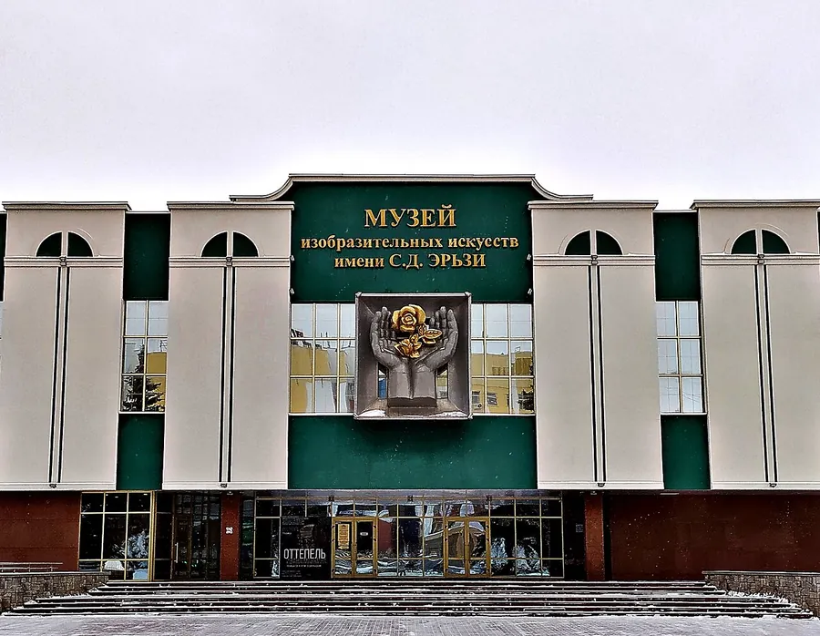
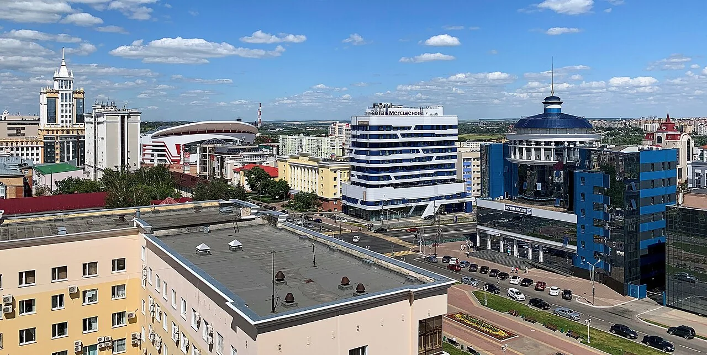
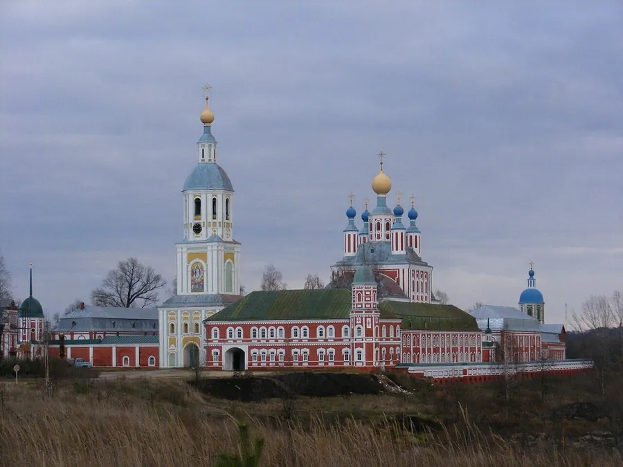
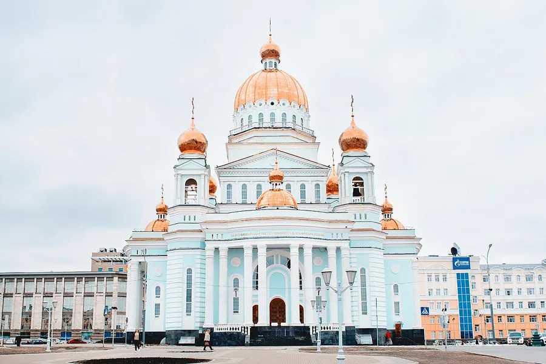
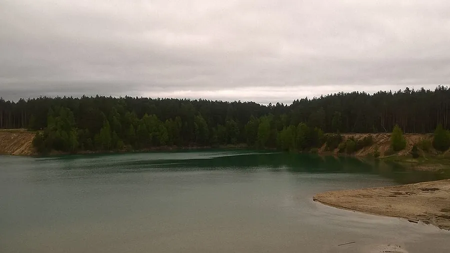

Музей изобразительных искусств имени Эрьзи
В Саранске хранится крупное собрание работ скульптора Степана Эрьзи. В коллекции музея также представлены произведения живописца Федота Сычкова.
Городские площади Саранска, леса вдоль Мокши и Алатыря и ремёсла эрзи и мокши рассказывают разные истории об одном крае.

Мордовия расположена на стыке Окско-Донской низменности и Приволжской возвышенности. Саранск стоит на реке Инсар. В западной части республики много лесов, к востоку преобладают холмистые лесостепные ландшафты.
В составе Средневолжской области создан Мордовский округ.
Мордовский округ преобразован в Мордовскую автономную область.
Образована Мордовская АССР.
Республика получила современное название — Республика Мордовия.

В Саранске хранится крупное собрание работ скульптора Степана Эрьзи. В коллекции музея также представлены произведения живописца Федота Сычкова.

Монастырь основан в XVII веке на берегу Мокши неподалёку от Темникова. Здесь похоронен флотоводец Фёдор Ушаков.

Собор открыли в Саранске в 2006 году. Его колонны и портики выполнены в духе ампира, а над зданием поднимается большой золочёный купол.

Парк на левом берегу Алатыря охраняет сосновые, широколиственные и смешанные леса. В речной пойме встречаются озёра и болота.
Крупные реки Мордовии — Мокша и Сура. На западе, в бассейне Мокши, находится Мордовский заповедник имени П. Г. Смидовича. На северо-востоке лесные массивы защищает парк «Смольный».
Эрзя и мокша сохраняют свои языки, песенные традиции и вышивку. В селе Подлесная Тавла мастера вырезают из дерева фигурки людей, животных и персонажей фольклора.
Пачат — толстые дрожжевые блины. Офтонь мадят называют «медвежьей лапой» за форму котлеты и сухарики, напоминающие когти.